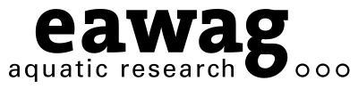
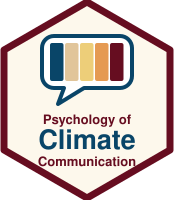
Climate change misinformation
Psychology of Climate Change Communication · Week 9
Dr. Viktoria Cologna and Dr. Jan Pfänder
Two weeks ago
Reto Knutti told us what it is like to be a climate scientist in public: he is attacked personally and discredited, rather than argued with.
Not an isolated experience

Climate and health action are “hampered by a common threat: politically and ideologically motivated opposition to science”.
How common are such attacks?
Of 468 climate scientists who answered a voluntary survey in 2023, 39% had experienced online harassment or abuse related to their research. Among those who appear in the media at least once a month, 73% had. (Global Witness, 2023)
Of 321 scientists who answered a voluntary survey after speaking publicly about COVID-19, 15% had received death threats and 22% threats of physical or sexual violence. (Nogrady, 2021)
Overview
I. The production of misinformation
- A short history of organised climate change denial
- From denial to delay
II. The consumption of misinformation
- How much misinformation is there?
- How do we measure belief in misinformation?
- Countering misinformation
III. Beyond misinformation: trust in true information and the news ecosystem
I. The production of misinformation
1. A short history of organised climate change denial
What Exxon knew
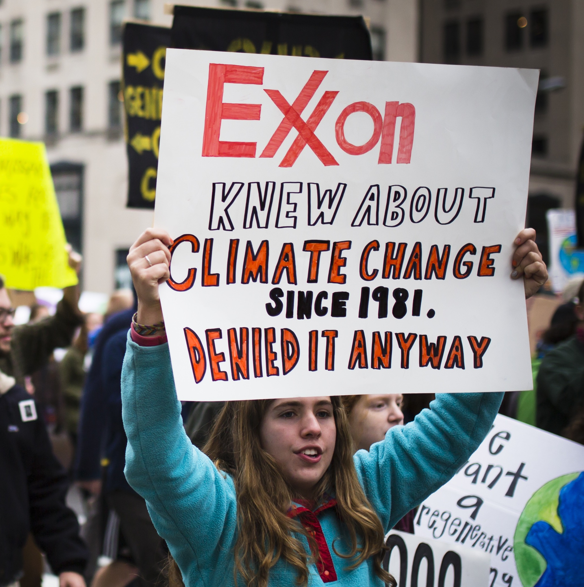
In 1978, the Exxon scientist James Black showed the company’s management committee a projection of the warming to expect if CO2 doubled.
A 1982 internal primer spoke of “unanimous agreement in the scientific community” that a warming of about 3 °C would change the earth’s climate significantly. (Supran & Oreskes, 2017)
What Exxon said
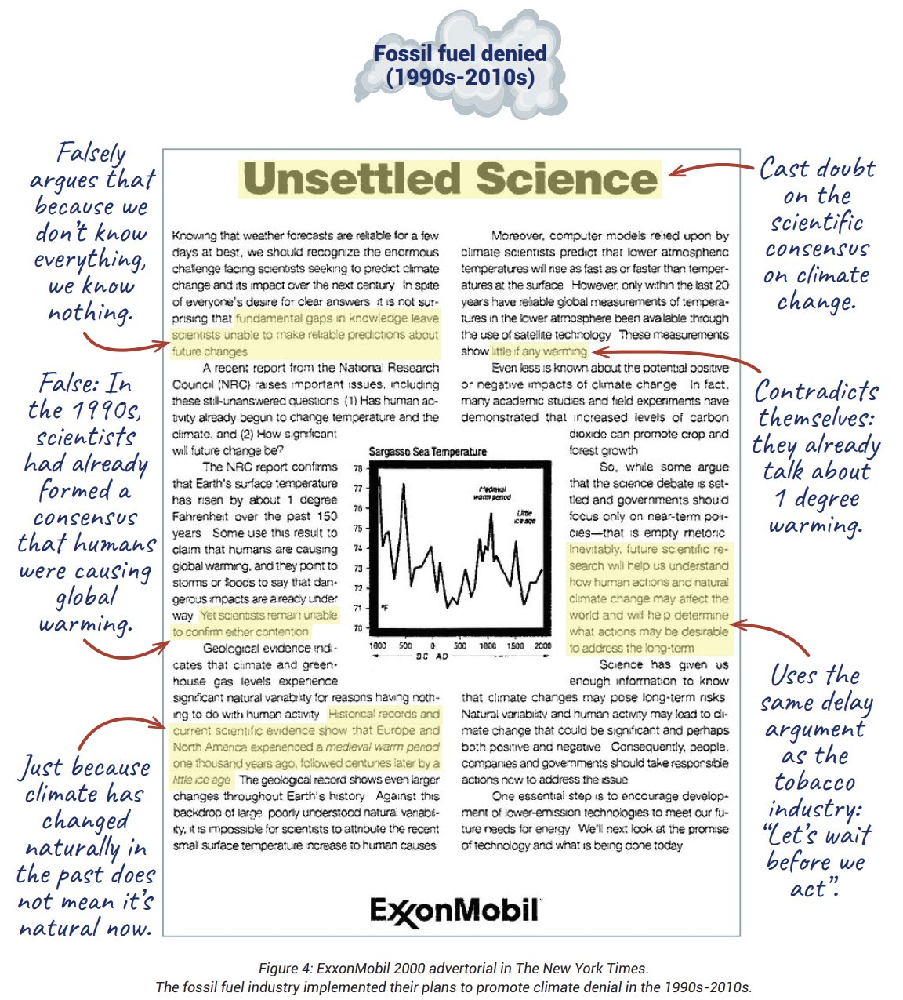
In 1980, with help from outside public relations advisers, the company drew up a “CO2 Greenhouse Communications Plan” aimed at “opinion leaders who are not scientists”.
By 1989 its stated aim was to “emphasize the uncertainty in scientific conclusions”. That year the first of 36 paid, editorial-style advertisements appeared in the New York Times. (Supran & Oreskes, 2017)
Not only Exxon
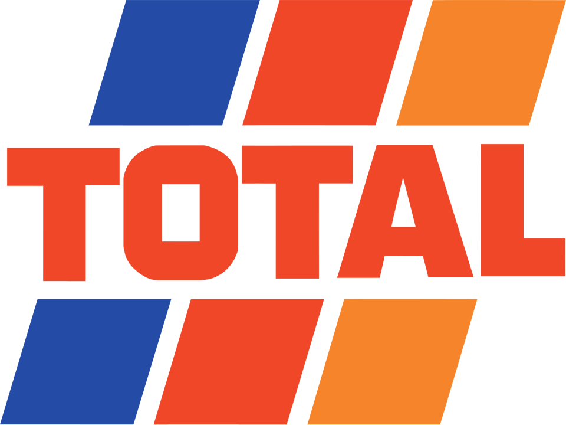
Historians who went through Total’s archives found that its staff received warnings of potentially catastrophic global warming from its products by 1971. (Bonneuil et al., 2021)
Merchants of doubt
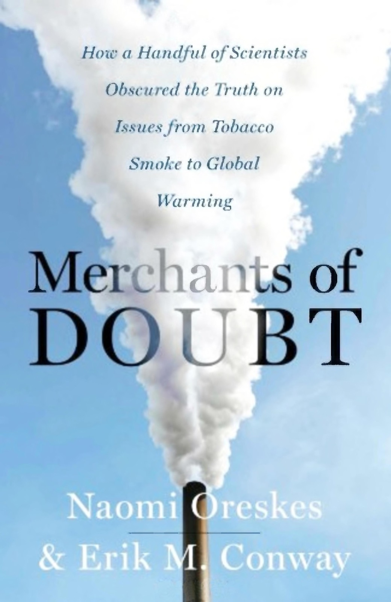
A small group of senior physicists, among them Fred Seitz, a former president of the US National Academy of Sciences, founded the George C. Marshall Institute, a think tank that from 1989 on campaigned against climate science.
ExxonMobil was among its funders. (Oreskes & Conway, 2010)
Doubt as a political strategy
In 2002 the Republican consultant Frank Luntz wrote a confidential memo for his party on how to talk about the environment. (Luntz Research Companies, 2002)
“Should the public come to believe that the scientific issues are settled, their views about global warming will change accordingly. Therefore, you need to continue to make the lack of scientific certainty a primary issue in the debate.”
2. From denial to delay
From “it’s not happening” to “solutions won’t work”
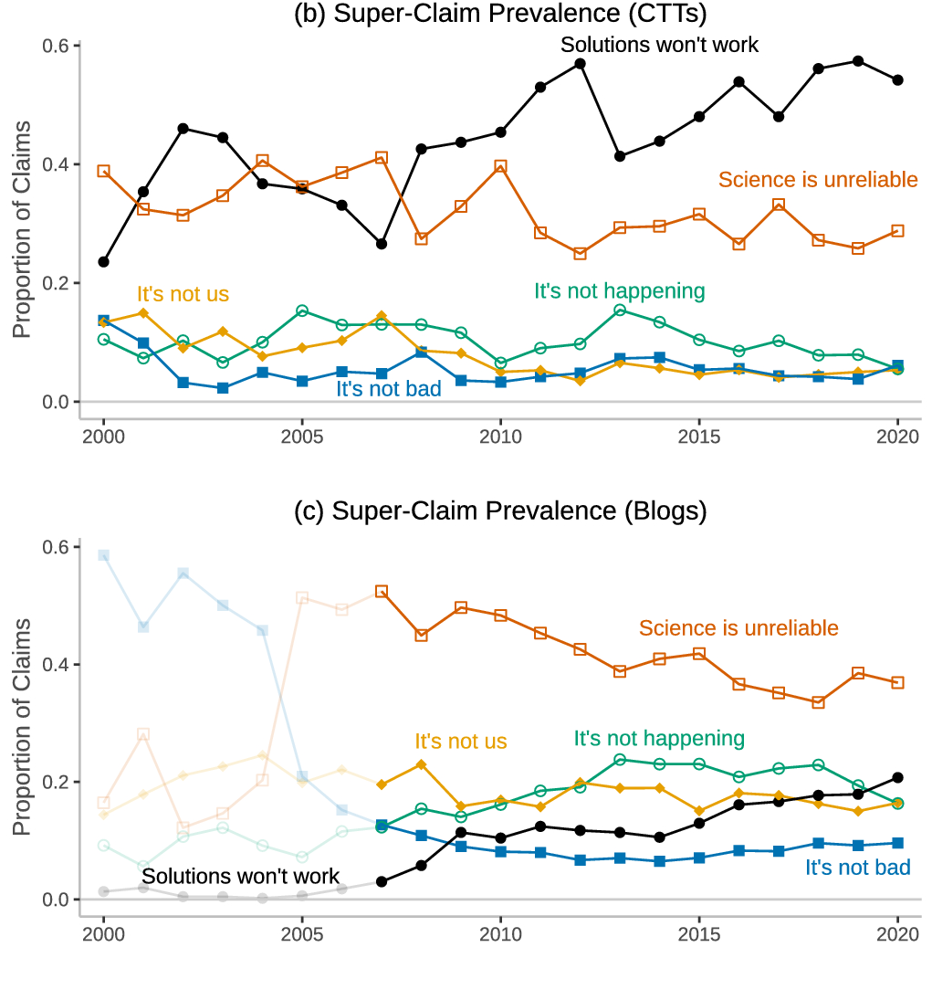
Panels b and c of Figure 2 in Coan et al. (2021)
Discourses of climate delay
Discourses of climate delay are arguments that “accept the existence of climate change, but justify inaction or inadequate efforts”. (Lamb et al., 2020)

Lamb et al. (2020)
Individualism, made by an oil company
In the early 2000s, BP hired the advertising agency Ogilvy & Mather for a campaign.
The campaign popularised the term “carbon footprint”, and in 2004 BP launched a calculator that let people work out how much of the problem was their own daily life. In that first year, 278,000 people used it. (Kaufman, 2020)
. . .
The campaign shifted the focus from the producer, oil companies, to individual consumers.
Does spreading misinformation work?
Denial is more popular than ever:
In the EU, the share who say it is true that “climate change is for the most part caused by natural cycles rather than human activities” rose from 26% in 2021 to 35% in 2024. (European Commission, Directorate-General for Research and Innovation, 2021, 2025)
Whether this is due to misinformation is a hard question to answer.
II. The consumption of misinformation
Some definitions
Misinformation is false or misleading information, regardless of whether anyone intended to mislead.
Disinformation is misinformation that is spread deliberately, to deceive.
Fake news imitates the form of news media content without its editorial process.
3. How much misinformation is there?
Poll
What share of what people consume online is misinformation, according to studies that measure actual behaviour (browsing histories, feeds)?
- less than 2%
- 2 to 10%
- 10 to 25%
- more than 25%
How much misinformation is there?
A review of 443 studies found that, in the studies that measured actual behaviour, misinformation is a median 1.3% of what people consume online. (Altay, 2026)
Asked in surveys, however, 58% of respondents say they have seen misinformation. (Altay, 2026)
And for climate change specifically?
On average across eight countries, 25% said they had seen false or misleading information about climate change in the past week. (Ejaz et al., 2025)
Why quantifying exposure to misinformation is hard
Most prevalence studies quantify misinformation with posts from untrustworthy fringe websites. Misleading claims by politicians, think tanks and mainstream outlets are usually not counted. (U. K. H. Ecker et al., 2025)
Also not entering the count: when journalists give a contrarian the same weight as the scientific consensus. Today’s reading calls this “one of the most insidious […] forms of climate misinformation”. (Lewandowsky, 2021)
4. How do we measure belief in misinformation?
What typical studies look like
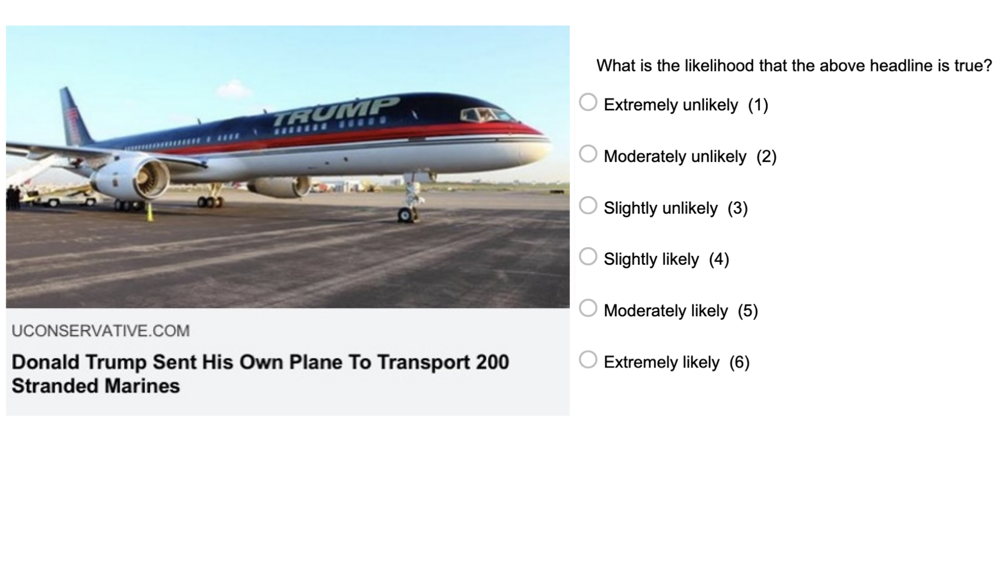
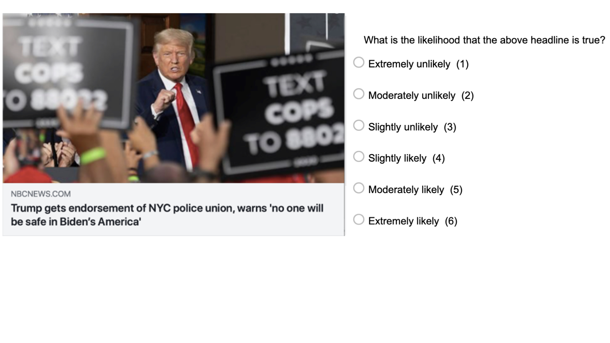
Example items from Pennycook, Binnendyk, et al. (2021)
The main outcome
Discernment
=
average accuracy rating of true news − average accuracy rating of false news
5. Countering misinformation
A toolbox
An influential review sorts nine kinds of intervention into three families (Kozyreva et al., 2024):
| Nudges | Boosts and educational interventions | Refutation strategies |
|---|---|---|
| Accuracy prompts | Media-literacy tips | Debunking and rebuttals |
| Friction | Inoculation | Warning and fact-checking labels |
| Social norms | Lateral reading and verification | Source-credibility labels |
Media literacy: recognising techniques
You do not need to know every false claim. Most misinformation relies on a small set of rhetorical techniques, and those can be learned.
FLICC (Cook, 2020a)
| Technique | Typical climate claim |
|---|---|
| Fake experts | “There is no expert consensus because 31,487 Americans with a science degree signed a petition saying humans aren’t disrupting climate.” |
| Logical fallacies | “Climate has changed naturally in the past so what’s happening now must be natural.” |
| Impossible expectations | “Scientists can’t even predict the weather next week. How can they predict the climate in 100 years?” |
| Cherry picking | “Global warming stopped in 1998.” |
| Conspiracy theories | “The climategate emails prove that climate scientists have engaged in a conspiracy to deceive the public.” |
Examples from Cook (2020b)
Do media literacy tips work?
Two recent meta-analyses, of 49 and 33 experiments, find that media literacy interventions on average help people judge false news more accurately. (Huang et al., 2026; Lu et al., 2024)
These analyses pool very different formats. Programmes with several sessions work better than a single session.
Accuracy prompts
A simple reminder to think about accuracy improved the quality of what people went on to share, also in a field experiment on Twitter. (Pennycook, Epstein, et al., 2021)
The effect is small: across 20 experiments, prompts reduced intentions to share false headlines by about 10%. (Pennycook & Rand, 2022)
An independent replication failed at first and found a small effect only after doubling its sample. (Roozenbeek et al., 2021)
Debunking
Corrections work, but rarely completely. People continue to rely on information they know has been corrected: the continued influence effect. (Chan et al., 2017; Lewandowsky et al., 2012; Walter & Murphy, 2018)
“Debunking can often correct factual misperceptions but may not shift attitudes or policy preferences.” (Lewandowsky, 2021)
(which raises the question on how important the misinformation was for these attitudes and policy preferences in the first place)
Prebunking and inoculation
Prebunking is any warning or correction delivered before people meet the misinformation.
Inoculation describes how prebunking is supposed to protect: expose people to a weakened dose of a persuasive attack, together with a refutation, and they build “mental antibodies” against the full attack later.
Inoculation as a game
In the game Bad News, players run a fake news site and use six common manipulation techniques. Afterwards, they tend to spot misinformation better. (Basol et al., 2020; Roozenbeek & van der Linden, 2019)
In five long-term experiments, text and video inoculations stayed effective for a month, while the game’s effect decayed faster. (Maertens et al., 2025)
Short inoculation videos against five misinformation techniques, shown as YouTube ads to millions of users, improved recognition of those techniques, but only by a small margin. (Roozenbeek et al., 2022)
Make your own misinformation (10 minutes)
In pairs, on one phone, play Bad News at getbadnews.com or getbadnews.de. Stop after your third badge.
getbadnews.com/en
Does inoculation work against climate misinformation?
A review of 13 climate studies finds that inoculation reduced susceptibility to climate misinformation, but only two followed people over time. (La Selva et al., 2026)
Yet the largest study in that review found almost no protection. (Spampatti et al., 2023)
Inoculation against climate misinformation in 12 countries
Tobia Spampatti and colleagues tested six inoculation strategies on 6,816 participants in 12 countries. Afterwards, participants read twenty pieces of real-world climate disinformation. (Spampatti et al., 2023)
The six strategies: scientific consensus, trust in scientists, transparent communication, moralisation of climate action, accuracy, positive emotions.
The study answers two questions at once: what does exposure to disinformation do, and does inoculation protect against it?
Two results
- Exposure to the disinformation lowered belief in climate change, made people feel less positive about reducing emissions, and reduced pro-environmental behaviour.
- Inoculation strategies hardly helped prevent this.
“While exposure to disinformation had strong detrimental effects […], we found almost no evidence for protective effects of the inoculations.” (Spampatti et al., 2023)

Spampatti et al. (2023)
III. Beyond misinformation: trust in true information and the news ecosystem
Everyone is worried about misinformation

Figure C in World Economic Forum (2024)
Misinformation can clearly cause harm
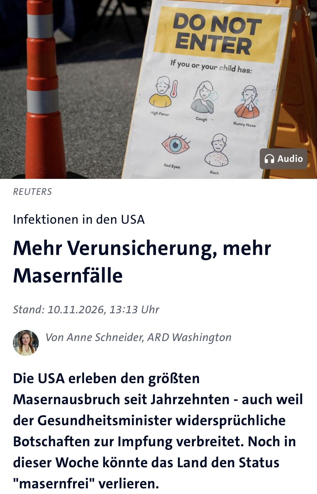
Anne Schneider, ARD Washington, “Mehr Verunsicherung, mehr Masernfälle”, 10 November 2026. Photo: Reuters
Misinformation can clearly cause harm
Today’s reading: “Misinformation demonstrably undermines the public’s knowledge and acceptance of climate change.” (Lewandowsky, 2021)
The IPCC: misinformation “has created polarisation in public and policy domains in North America, particularly in the USA, limiting climate action (high confidence)”. (Hicke et al., 2022)
To quantify this harm is hard (as we’ve seen before). But assuming that the harm is real, are the kinds of interventions we saw before the right way to fight misinformation?
The limits of individual-level interventions
The effects of debunking, prebunking and accuracy prompts are real, at least in some contexts, but modest, and many fade within weeks. (Capewell et al., 2024; Fazio et al., 2024; Maertens et al., 2025)
Beyond that, three limits:
- Scale: there is far more misinformation than anyone can correct.
- Reach: interventions reach the people who choose to engage, rarely those most exposed.
- Side effects: they can make people doubt true news as well.
1. Scale
Brandolini’s law: “The amount of energy needed to refute bullshit is an order of magnitude bigger than to produce it.” (Ordre Spontané, 2014; Williamson, 2016)
On Twitter, false rumours reached more people than true ones, and spread faster. (Vosoughi et al., 2018)
2. Reach
Exposure to misinformation concentrates in a narrow fringe of highly motivated users, who are probably among the least likely to play a game or watch a prebunking video. (Budak et al., 2024)
3. Side effects: telling true from false
| Rated as true | Rated as false | |
|---|---|---|
| True news | correct | scepticism error |
| False news | gullibility error | correct |
An intervention can lower belief in false news just by making people sceptical of all news (including true ones).
3. Side effects: scepticism towards true news
In experiments in three countries, fact-checks, media literacy tips and news coverage of misinformation all lowered belief in false news, but they also made people believe true news less. (Hoes et al., 2024)
Replications of Bad News found the same pattern: the game lowered belief in true news about as much as in false news. (Graham et al., 2023; Modirrousta-Galian & Higham, 2023; Pennycook et al., 2024)
But: a reanalysis co-authored by one of the game’s developers disagrees, so the debate is not settled. (Lu et al., 2023; Simchon et al., 2025)
People are more sceptical than gullible
Across 67 experimental papers from 40 countries, people rated true news as much more accurate than fact-checked false news. When they made mistakes, they more often doubted true news than believed false news. (Pfänder & Altay, 2025)
“There is more room to increase the acceptance of true news than to reduce the acceptance of fact-checked false news.” (Pfänder & Altay, 2025)
Trust in news is low in most countries
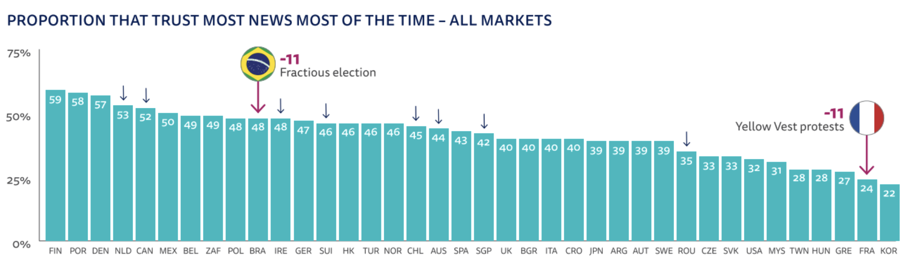
Newman et al. (2019)
And interest in news is declining
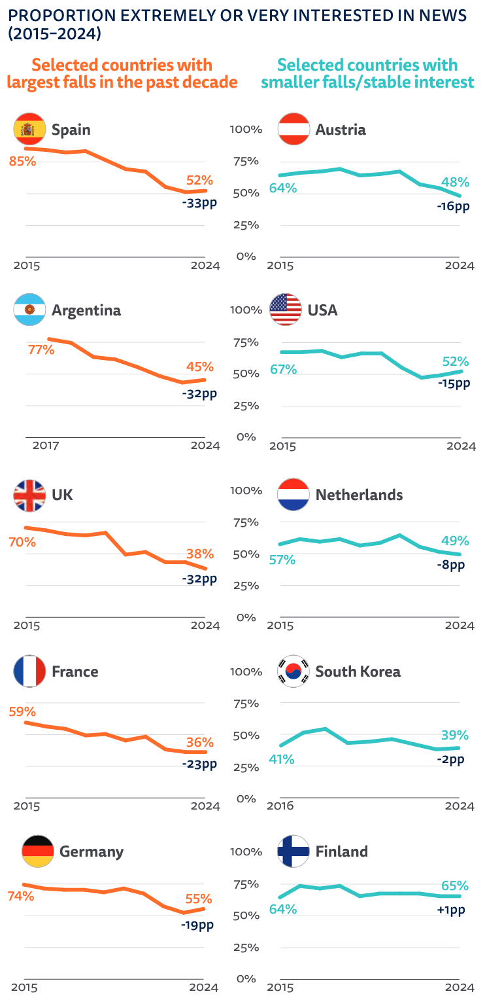
Newman et al. (2024)
Individual-level interventions, whether focused on misinformation or strengthening trust, tend to miss bigger-picture issues of today’s media landscape.
The economics of news
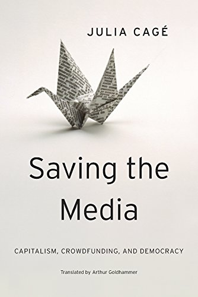
“There have never been as many information producers as there are today. Paradoxically, the media have never been in worse shape.” (Cagé, 2016)
Less money, less quality journalism
When advertising revenue falls, newspapers cut the journalism that is expensive to produce. (Angelucci & Cagé, 2019)
Online, a quarter of news stories are copied by other outlets within four minutes. The authors see this copying as a threat to the commercial viability of news media. (Cagé et al., 2020)
Who owns the news?
| Owner | Newspaper |
|---|---|
| Jeff Bezos, founder of Amazon | The Washington Post |
| John Henry, owner of the Boston Red Sox | The Boston Globe |
| Patrick Soon-Shiong, biotech billionaire | Los Angeles Times |
| Christoph Blocher, former Swiss justice minister | Basler Zeitung |
Melley (2018); “Newspaper Takeover Reveals Rightwing Strategy” (2011)
Who owns the news?
“If the media of the future must depend on wealthy investors for their financing, many dangers lie ahead.” (Cagé, 2016)
Cagé’s argument: news, like education, is a public good. Her proposal is a nonprofit media organisation, financed by readers, employees and crowdfunding rather than by a dominant shareholder.
Where independent journalism is weak, misinformation campaigns have an easy field.
Flooding the zone
Steve Bannon, 2018: “The real opposition is the media. And the way to deal with them is to flood the zone with shit.” (Lewis, 2018)
Does flooding work?
“Disinformation strategies are often deployed by professionals to elicit confusion rather than to persuade.” (Szegőfi et al., 2027)
In two experiments on sunscreens and GMOs, flooding sometimes left people less sure what to believe, and made them feel overwhelmed by information.
To take home
Companies that knew the science funded doubt about it. The message has shifted from denying the problem to attacking the solutions.
Studies suggest that exposure to misinformation is rare online. However, the counts of these studies tend to miss some of the most harmful organised, elite misinformation that matters for climate change.
Individual-level interventions can help people recognise misinformation. Debunking, prebunking and accuracy prompts all help somewhat.
To take home
But individual-level interventions have modest effects, reach few of the people most exposed, and can make people doubt true news too.
Trust in news is low, and few people regularly come across news or science. Where journalism is weak, flooding the zone works. Strong and independent journalism may be the best protection.
Backup
A different goal: increasing trust in true information
Tips that encouraged trust in reliable news improved people’s ability to tell true from false news as much as tips that encouraged scepticism, and they also increased trust in traditional media. (Altay et al., 2024)
In France and Germany, following two news accounts on Instagram or WhatsApp for two weeks improved people’s ability to tell true from false news and increased their trust in the news. (Altay et al., 2025)
Can AI scale up fact-checking?
Fact-checkers cannot keep up with the volume of online content. Could language models? (Hoes et al., 2023)
By 2026, the best models agreed with professional fact-checkers as closely as the fact-checkers agreed with each other. (Renault et al., 2026)
But a machine’s correction works only if people trust the machine. Telling readers that a correction came from Grok made Republicans update more and Democrats less.
Dialogues with an AI
Short personalised conversations with an AI reduced belief in conspiracy theories by about 20%, for at least two months. (Costello et al., 2024)
In the US, similar dialogues shifted beliefs about climate change, most strongly among people who were sceptical at the start. (Kotz et al., 2026)
Lazy or biased?
“Susceptibility to fake news is driven more by lazy thinking than it is by partisan bias per se.” (Pennycook & Rand, 2019)
But paying people for accurate answers reduced partisan bias, the tendency to doubt true news from the other political side, by about 30%. (Rathje et al., 2023)
Another study found partisan bias the stronger predictor of believing misinformation. (Gawronski et al., 2023)
Across 40 countries, political congruence did not change how well people told true from false news. It made them more sceptical of news from the other side, true or false. (Pfänder & Altay, 2025)
So there is a partisan bias, and it works through scepticism: people doubt news from the other side, whether it is true or false.
Analytical thinking helps
In a meta-analysis of 31 experiments with 11,561 US participants, people with higher analytical thinking skills were better at telling true from false news. (Sultan et al., 2024)
Age
In a US panel whose Facebook data were linked, only 8.5% shared any link from a fake news site during the 2016 campaign. (A. Guess et al., 2019)
Users over 65 shared nearly seven times as much as the youngest age group. (Brashier & Schacter, 2020; A. Guess et al., 2019)
Yet when asked to judge headlines, older participants told true from false better than younger ones. (Sultan et al., 2024)
Sharing and believing are different things. Older adults’ sharing seems to follow social motives and lower digital literacy rather than belief.
What today’s reading concludes
- Climate change challenges our cognitive abilities and the worldviews of many.
- Communication takes place in an environment of adversity.
- Information about the scientific consensus, and about why climate change occurs, can enhance acceptance of science.
- Culturally aligned messages and messengers are more likely to succeed.
- Inoculation can defang misinformation before it is encountered.
Summary points, shortened, from Lewandowsky (2021)
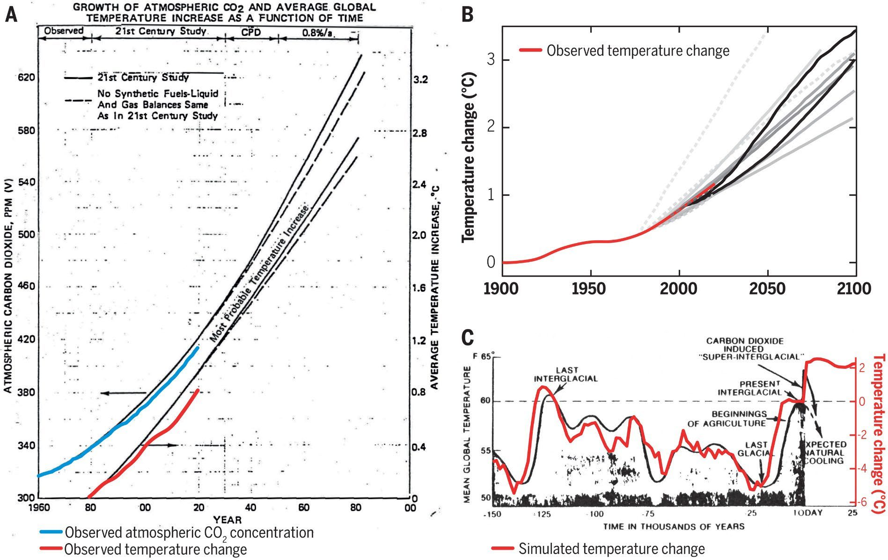
Figure in Supran et al. (2023). (A) A 1982 internal Exxon projection with observed CO2 (blue) and temperature (red) added. (B) Projections from seven internal memos and five peer-reviewed papers, 1977 to 2003 (grey), against observed warming (red). (C) A 1977 internal graph of a CO2-induced “super-interglacial”.
Repetition makes claims feel true
One more factor, familiarity. A claim seen before is judged as more accurate than a new one, even when it is false. (Pennycook et al., 2018)
A meta-analysis of 182 studies finds this illusory truth effect to be robust but small once publication bias is corrected for, and most studies come from Western university samples. (Ye et al., 2026)
What do persuasion techniques do to climate claims?
In five EU countries, seven persuasion techniques lowered agreement with climate claims overall, mainly because people agreed less with true claims written in this style. (Nohlen & Bruns, 2025, report)
Some techniques, such as appeal to authority and black-and-white fallacy, did make false claims more convincing.
The backfire effect, which mostly does not appear
An influential 2010 study found that corrections could increase a misperception among the group most committed to it. (Nyhan & Reifler, 2010)
Later attempts to reproduce this, across 52 issues and more than 10,000 participants, “found no corrections capable of triggering backfire”. (Wood & Porter, 2019)
How to debunk
The recommended order: state the fact, warn that a myth is coming, explain the fallacy behind the myth, end with the fact again. (Lewandowsky et al., 2020)
Does repeating the myth in order to correct it backfire? It seems not. (U. K. H. Ecker et al., 2020)
In public debates with science deniers, correcting the facts and exposing the technique both had positive effects on the audience. Not responding was the worst option. (Schmid & Betsch, 2019)